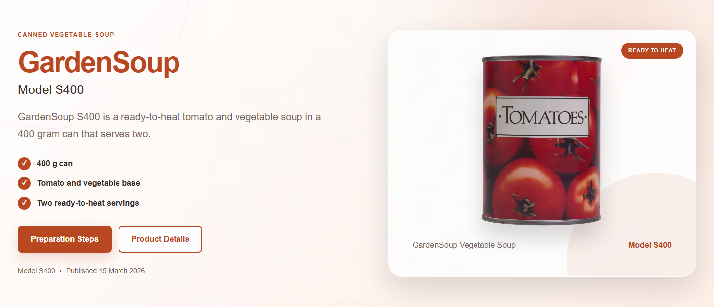
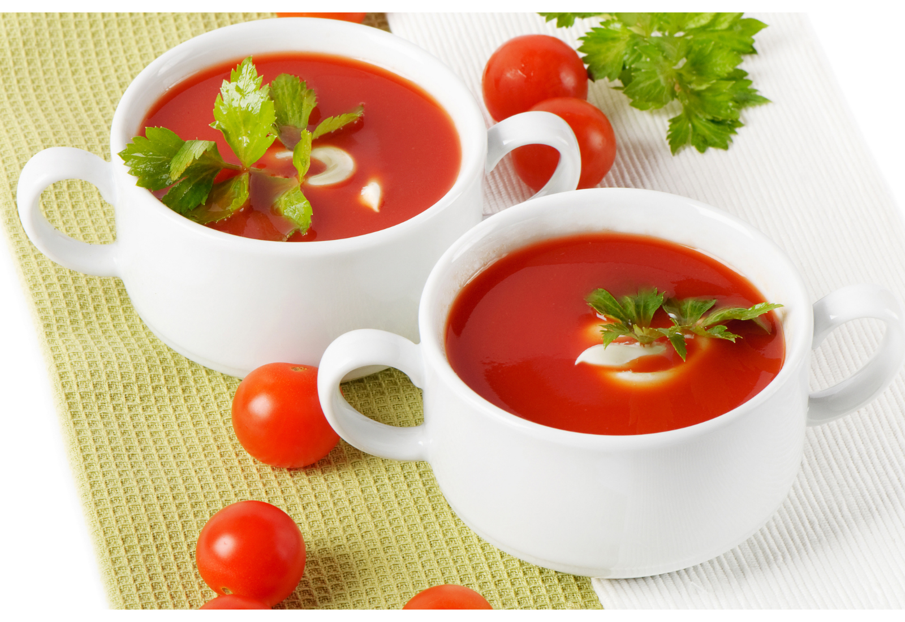
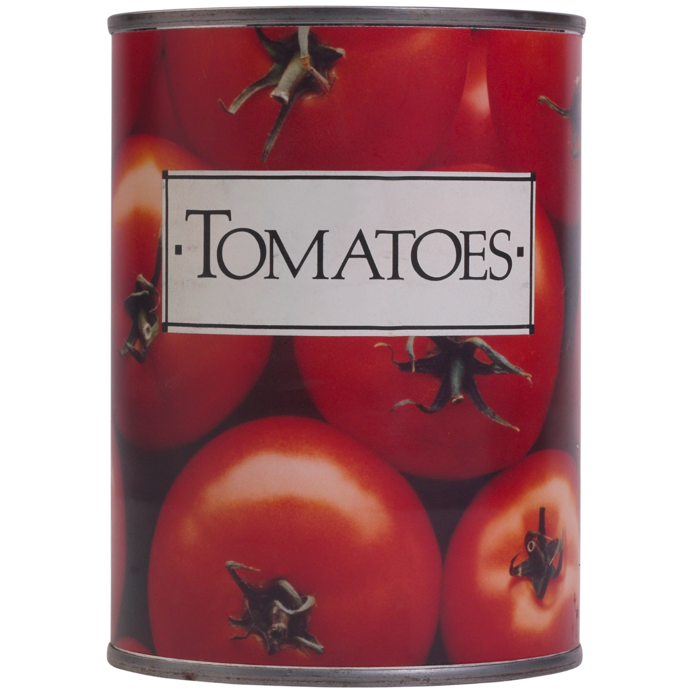

Tomato and vegetable base
The prepared soup base requires no added water.

Credentials applied with: Adobe Content Authenticity
Asset type: PNG image with embedded Content Credentials
Credential location: Embedded in the asset file
Last verification: Passed on 19/11/2026 using Content Credentials Verify
Verify Content CredentialsCredentials applied with: Adobe Content Authenticity
Asset type: PNG image with embedded Content Credentials
Credential location: Embedded in the asset file
Last verification: Passed on 19/11/2026 using Content Credentials Verify
Verify Content CredentialsSimple preparation
GardenSoup S400 is a 400 gram canned tomato and vegetable soup that provides two servings.
Transfer the soup to a saucepan or microwave-safe bowl before heating.
Heat thoroughly, stir carefully and divide the soup between two bowls.
Product highlights
GardenSoup S400 combines a tomato and vegetable base with two servings in one 400 gram can.
The prepared soup base requires no added water.
One can contains 400 grams of soup.
Divide one heated can between two bowls.
Transfer the soup from the can before heating.
Use a saucepan or microwave-safe bowl.

Preparation
Move the soup to a suitable container, heat it thoroughly, stir it and serve it in two bowls.
Heat the prepared soup without dilution.
Stir the soup to distribute the heat.
Divide the heated soup between two bowls.
Serving quantity
Heat the 400 gram contents and divide the soup evenly into two servings.
Product details
Key information for QuickHarvest GardenSoup S400.

| Product name | GardenSoup |
|---|---|
| Model | S400 |
| Product category | Canned vegetable soup |
| Net contents | 400 g |
| Soup base | Tomato and vegetable |
| Servings | Two |
| Preparation | Ready to heat |
| Stovetop method | Heat in a saucepan and stir |
| Microwave method | Heat in a microwave-safe bowl and stir |
| Added water | Not required |
| Can heating | Not permitted |
| Product code | QH-S400-2026 |
Short explanation
Transfer, heat, stir and serve the soup.
Check and open the can carefully.
Pour the soup into a saucepan or microwave-safe bowl.
Heat thoroughly and stir during preparation.
Divide the soup evenly between two bowls.
Important information
Handle the can, hot soup and leftovers carefully.
Refrigerate unused soup in a separate covered container.
Questions and Answers
Find short answers about GardenSoup S400.
GardenSoup S400 is a ready-to-heat tomato and vegetable soup in a 400 gram can.
No added water is required.
Heat the soup in a saucepan or microwave-safe bowl.
One can provides two servings.
No, transfer the soup before heating.
Refrigerate leftovers in a separate covered container.